代表人物 Representative figure
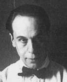
彼埃·蒙德里安（英文：Piet Cornelies Mondrian，1872年3月7日-1944年2月1日），荷兰画家，风格派运动幕后艺术家和非具象绘画的创始者之一，对后世的建筑、设计等影响很大。
维尔德生于乌特勒支市，是荷兰著名的建筑与工业设计大师、荷兰风格派的重要代表人物。他非常偏爱单纯的线条、颜色，以便大量制造，这种简洁的设计概念深刻地影响了日后的设计界。
1883年出生于荷兰的乌得勒之。他在早期撰写过寓言、剧本以及通过临摹博物馆的名画自学绘画。25岁那年，他首次举行个人作品展。其后，他开始发表艺术评论，创作了诗歌作品《满月》。自1916年（33岁）起，他参加了先锋派的所有重要活动，相继成为斯芬克司派运动及其同名杂志社的创始人之一。1917年（34岁），杜斯伯格在荷兰莱德创建"风格派"及其同名杂志。1921年（38岁），加入达达运动组织，进行达达艺术活动。1926年（43岁），在《风格》杂志上发表《元素主义宣言》，标志着他与新造型主义的早期原则的彻底决裂，同时也与蒙德里安分道扬镳。1930年（47岁），杜斯伯格成为"具体艺术派"和同名杂志的创始人之一。1931年（48岁）创建发展了抽象--创造团体。同年，他在瑞士的达沃斯去世，"风格派"也因其早逝而解散。在风格派期间，杜斯伯格领导整场运动并以《风格》杂志为纽带维系成员的关系，传播"风格派"抽象主义的艺术理念。
彼埃·蒙德里安（英文：Piet Cornelies Mondrian，1872年3月7日-1944年2月1日），荷兰画家，风格派运动幕后艺术家和非具象绘画的创始者之一，对后世的建筑、设计等影响很大。
蒙德里安是几何抽象画派的先驱，以几何图形为绘画的基本元素，与德士堡等创立了“风格派”，提倡自己的艺术“新造型主义”。他还认为艺术应根本脱离自然的外在形式，以表现抽象精神为目的，追求人与神统一的绝对境界，也就是现在我们熟知的“纯粹抽象”。蒙德里安及其荷兰“风格派”，作为一种艺术运动，并不局限于绘画。它对当时的建筑、家具、装饰艺术以及印刷业都有一定的影响。
维尔德生于乌特勒支市，是荷兰著名的建筑与工业设计大师、荷兰风格派的重要代表人物。他非常偏爱单纯的线条、颜色，以便大量制造，这种简洁的设计概念深刻地影响了日后的设计界。
里特维尔德1917年设计了现代主义设计运动的重要经典作品红/蓝椅，以一种实用产品的形式生动地解释了风格派抽象的艺术理论。他1934年设计了曲折椅，椅子的脚、座椅部分及靠背都摆脱了传统椅子的造型，非常节省空间。这张椅子是这位大师最具代表性的作品之一。1925年，里特维尔德设计了位于乌特勒列支市的什罗德住宅和住宅内的室内设计及家具设计，此建筑的风格完全是风格派的立体化体现。
作品
作品
.jpg)
简介
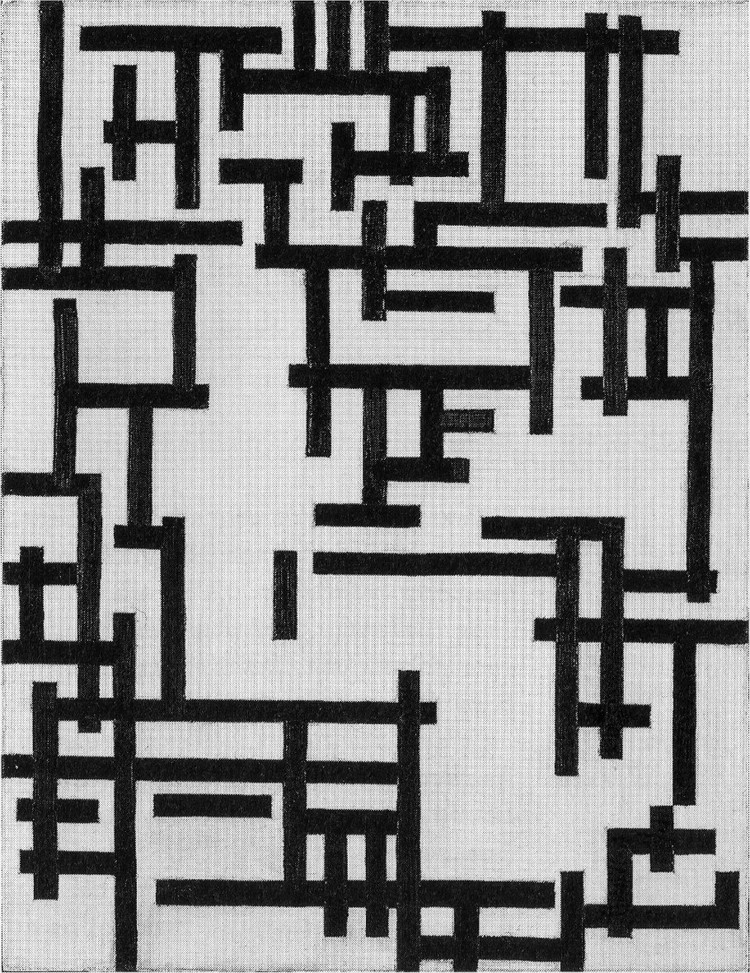
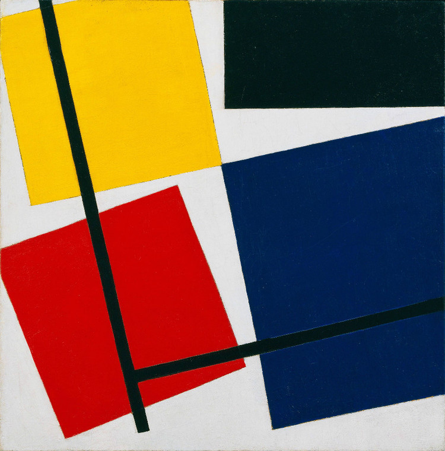
简介
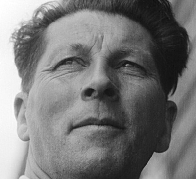
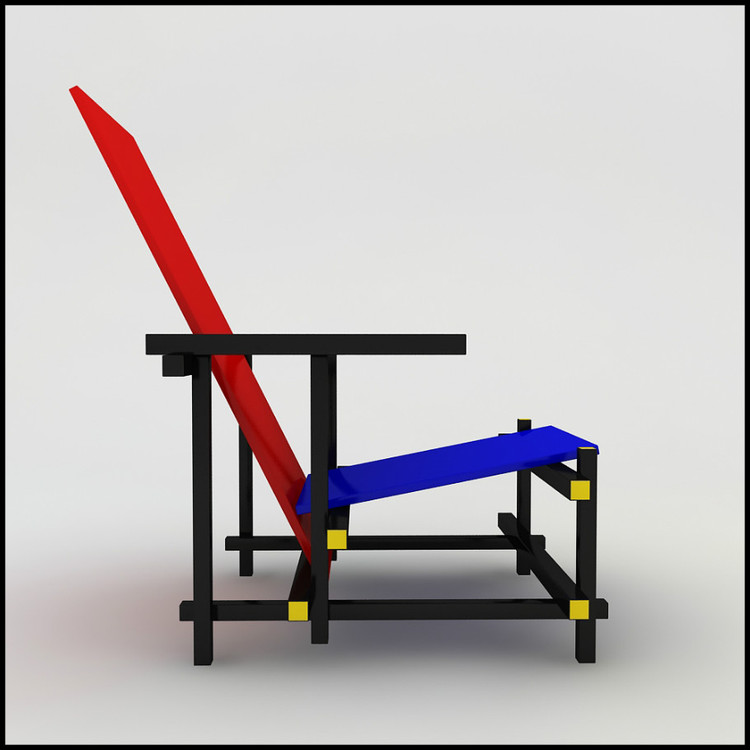
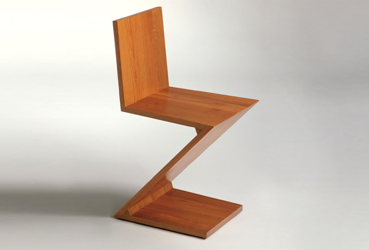
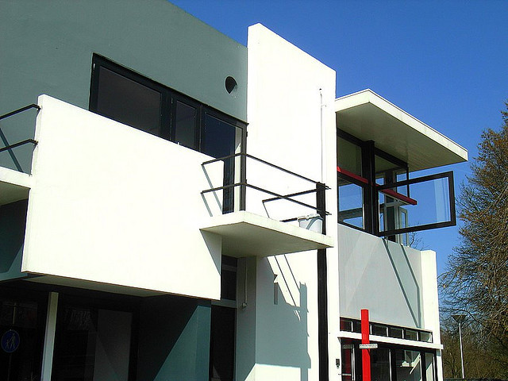
作品
简介
简介
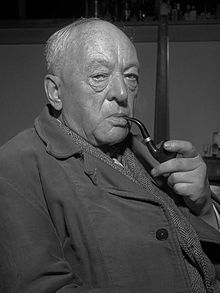
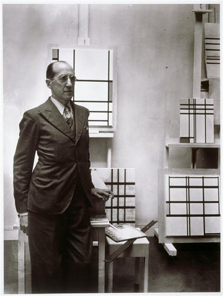
Bart van derLeck（1876年11月26日，乌得勒支1958年11月13日–，布拉里克姆）是一个荷兰语画家，设计师，和ceramacist。与杜斯伯格和蒙德里安他创立了风格派艺术运动。儿子一家的画家，他开始了他的职业生涯，学习如何使彩色玻璃在乌得勒支的一家商店。他后来的彩色玻璃工作的一个例子是在KR?ller-müller博物馆进入费吕沃，荷兰。见过蒙德里安和Doesburg，创立了风格派运动的人后，他的风格变得完全抽象的，就像蒙德里安的。但在蒙德里安他的抽象风格分歧成为了以具象的。他画的Tryptich就是一个例子，他在改变西班牙煤矿的草图到看似抽象的形状。1919-1920年他创造了室内设计St Hubertus狩猎小屋。
作品
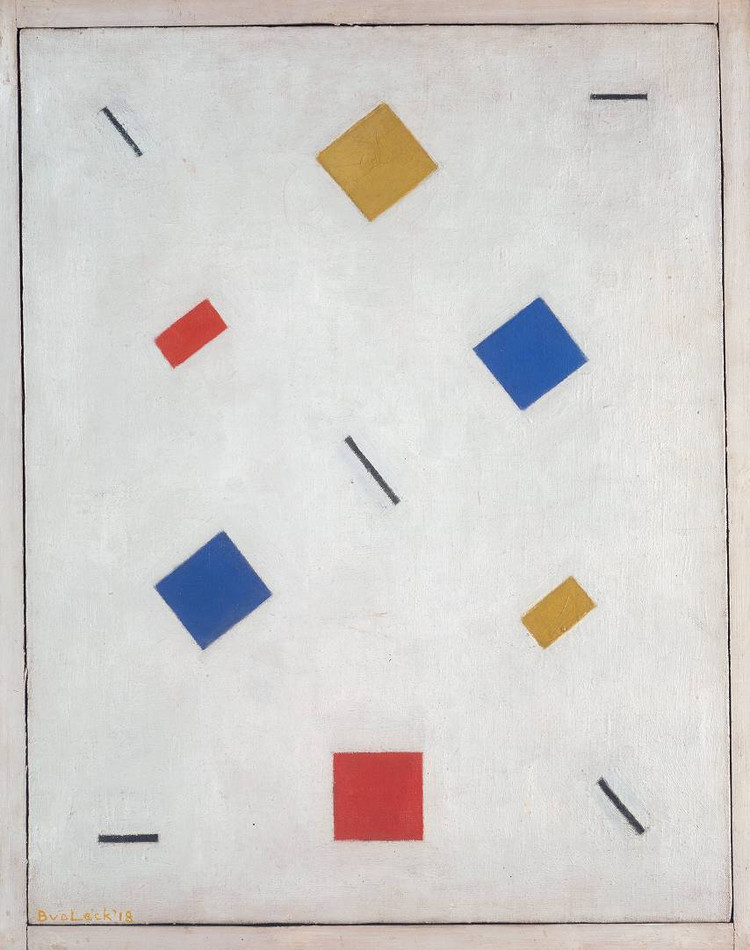
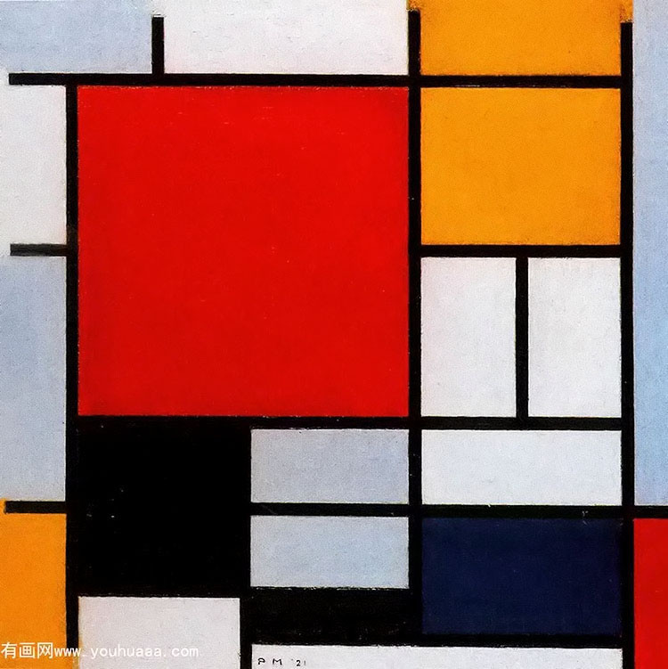
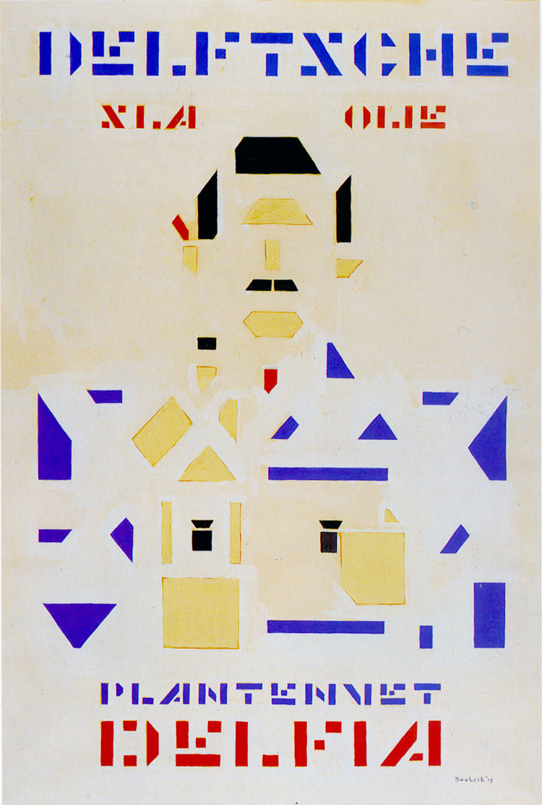
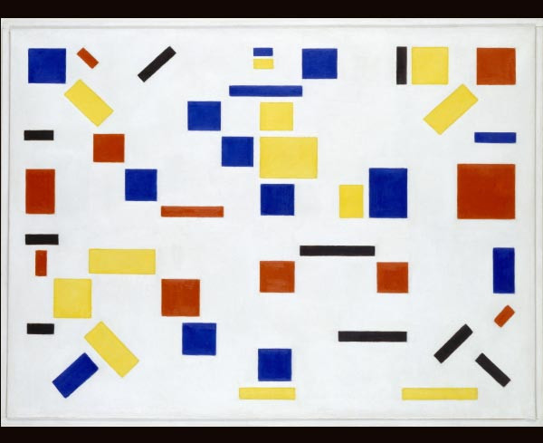
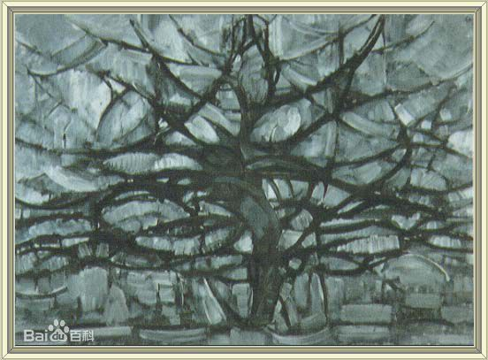